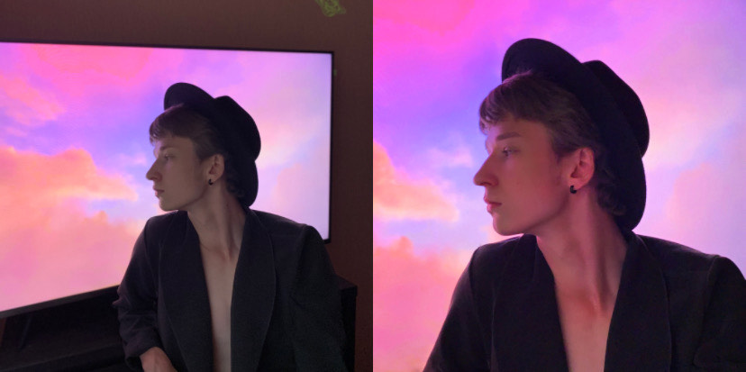

Editing is not about making yourself look as pretty as possible or completely altering the original photo, rather, it is about enhancing what has already been shot with the phone itself, giving the picture a professional and natural look.
First, get rid of all the things that can prevent you from enjoying the final result, such as pimples, single hairs, stains, people in the background, etc. Then it is time for color correction, the most impostant part of the process - if a photo is dark never lighten it too much, this will "burn out" certain areas of the picture. Same principle applies for the photos that are too light. Instead, work with colors that are present in the photo already, RGB curves will be very helpful here. Afterward, play around with the perspective of the shot to ensure that every object seems undistorted. Finally, crop the final picture and apply face retouching if needed. Using filters can both improve or worsen the quality of the photo, but in general, if you are going for a professional look that is not "toxic" in terms of vividness, do not use any filter at a level higher than 20%. Use a couple of filters at low levels as a solution. Regarding the software, Adobe Lightroom and Snapseed are great for first steps, and filters can be found in Facetune or VSCO. All of the steps were followed whilst editing the picture above.